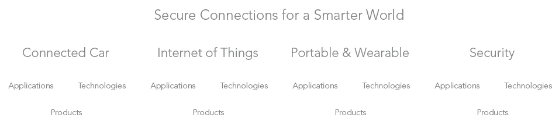

Moving towards selling solutions, is moving towards telling stories. The better we tell our stories, the more we will connect with our customers. We are passionate about our solutions, just like our customers are about theirs. So our stories will be passionate, personal, fresh, engaging, inspiring, connected to everyday life and show smart leadership. To emphasize this, we use: rich visuals, short and clear text, good typography, lots of videos, well worked-out details, simplicity and a seamless user- & brand experience accross all touch points.
Brand Guide
Last edit: Thu, 20 Aug 2015 09:19:39 +0200

Our brand
Structure
Connected Car
The automotive industry is rapidly evolving and NXP is at the forefront of this shift, helping transform the car from a simple mode of transport to a personalized mobile information hub. The modern car is already an incredibly complex inter-connected system. Our secure interfaces connect vehiclesto each other and the outside world, and allow us to personalize our driving experience. Providing customized entertainment services, helping relieve traffic congestionand making the overall driving experience more pleasurable and safer.
NXP brings car-to-x communications, telematics, and in-vehicle networking into the car, as well as secure wireless technologies for vehicle access, Near Field Communication (NFC) and multi-standard digital broadcast reception. NXPis also driving innovation in advanced technologies, suchas car radar.
Internet of things
The Internet of Things (IoT) will drastically change how we interact with objects, devices and the world around us. It is creating significant excitement with predictions of endless opportunities for extra convenience, comfort and efficiency for the end-user.
These opportunities will also benefit society in general, resulting in less waste, lower pollution and greater energy savings. The concept is building momentum quickly, but it is broad and will happen app by app, each with different starting points and growth curves.
At NXP we are constantly pushing the boundaries and clearly recognize the possibilities in the IoT domain. From smart lighting and building control to connected healthcare and beyond, NXP has the enabling technologies to drive IoT to the next level.
Portable & wearable
With the first smartphones and tablets came a revolution in the way we use and interact with technology. By making more secure ‘connections’ we are increasing the interactions with devices around us, and the way that we interact with these devices is becoming ever more natural.
So we need never again fumble about to answer our phone. We will just touch our ear or say a word. To connect to a device that we want to interact with, we’ll point in its direction and move our hand. Or simply swipe a wristband or watch, to enter a building, pay for goods or update our health / fitness records.
To achieve this, devices will be more integrated, even connected to our body, and always be 'on'. And NXP continues to push the technology to make this possible, from enabling smart sensing and energy efficient processing to permitting secure data exchange and supporting smart, fast, wireless charging of devices.
Security
Cloud services, smart grids, industrial automation, medical equipment. As more and more devices are being virtually connected to each other the demand for effective cyber security is growing.
Personal, corporate and government data needs to be secured though strong, secure, authorized access. Networked appliances need to be protected against malicious attacks from unauthorized sources. And the emerging smart grid must be impervious to data corruption to ensure reliable power supply and data security.
NXP ensures users and their devices are uniquely identified and secured against cyber attacks with integrated hardware, middleware and software security solutions.